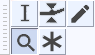

Zoom Tool
| This tool has been removed as part of the Toolbar re-arrangement in 3.2.0 and later. |
Tools Toolbar
- 
The image above shows the Tools Toolbar with the Zoom Tool selected.
- Click on this link to learn more about the Tools Toolbar.
- Click on other tools in the image to learn more about those tools.
Zooming in
To zoom in, position the mouse pointer over a track and left-click. The mouse pointer position will remain at the click point, while the length of time visible on the Timeline diminishes or expands on either side to respect the change in zoom level.
When zooming in or out with the zoom tool, Audacity will attempt to keep same time at the mouse pointer position. That is, Audacity will attempt to keep the same "piece" of audio under the magnifier pointer. That may not always be possible.
|
Zooming in to a specific region
Set up the zoom: You can zoom in on a specific region by clicking and dragging. Position the mouse at the left edge of the region you require, click and hold the mouse button, then drag the mouse in either direction:

After the zoom: When you release the mouse button, Audacity will zoom in to that region so that it now fits the window:

Zooming out
To zoom out, shift-click or click the right mouse button.
Shift click and drag zooms out based on the dragged region. The smaller the dragged region, the farther the audio will be zoomed out.
Aborting a zoom with the Escape key
If you commence a drag to zoom by mistake, you can press the Escape key Esc before releasing the mouse to cancel the zoom operation.